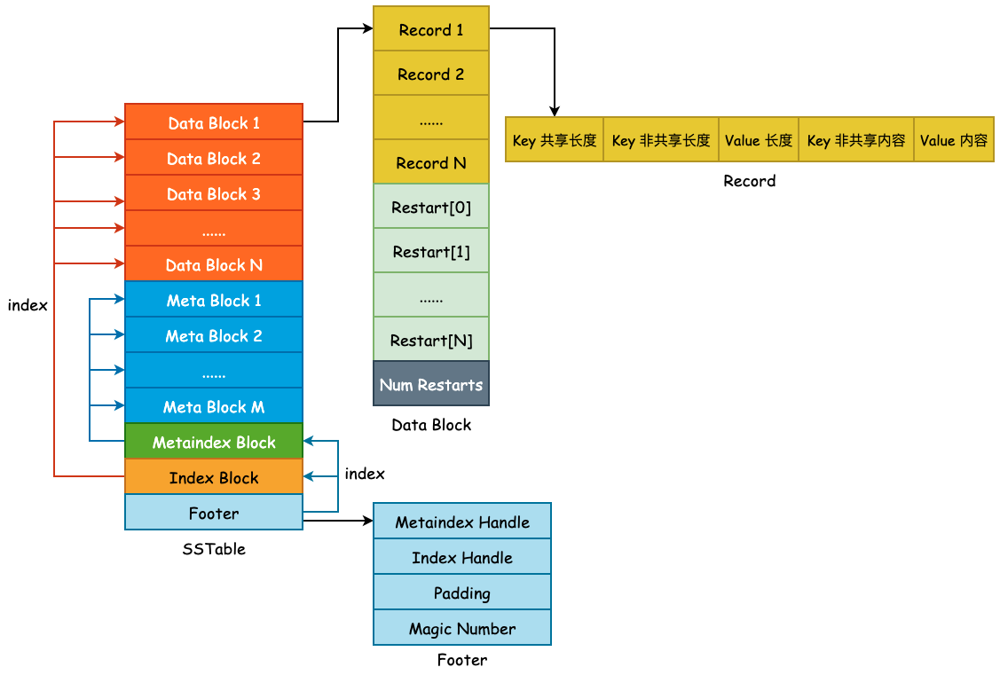
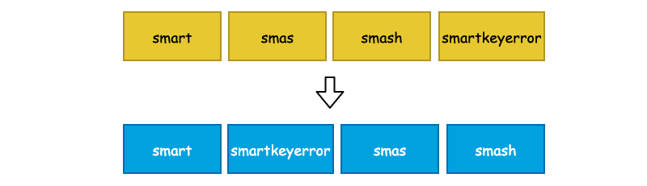

SSTable——概览与 Data Block

上图为 SSTable 格式的总览，主要由 Data Block、 Meta Block、Metaindex Block、Index Block 以及 Footer 所组成，主要分为 3 部分: 用户数据、元数据以及索引数据，其作用如下:
- Data Block: 按照
Comparator所定义的大小关系按顺序存储 User Key 以及 User Value。为了节省存储空间，leveldb 将会对 User Key 进行前缀压缩存储，将于下文详述。 - Meta Block: 用于快速 filter 某一个 User Key 是否在当前 SSTable 中，默认为 Bloom Filter。
- Metaindex Block: 指向 Meta Block 的索引，用于快速定位 Meta Block。
- Index Block: 指向 Data Block 的索引，用于快速定位 Data Block。
- Footer: 其中包含了 Metaindex Handle 和 Index Handle，其中 Metaindex Handle 指向 Metaindex Block 的起始位置和大小，Index Handle 则指向了 Index Block 的起始位置和大小，可以认为是索引的索引。
1. Data Block
User Key 和 User Value 在 leveldb 中是未做分离处理的，也就是说每一对 Key-Value 都会按照一定的顺序存储到 Data Block 中，并且 Data Block 是从文件起始位置连续存储的。在一个 Data Block 中，可能会有多条数据记录，同时由于这些数据记录是有序存储的（默认为字典序），那么相邻的两条数据之间的 User Key 就有很大的可能性出现前缀重叠，如下图的 4 个 User Key，它们都具有相同的 "sma" 前缀:

如此一来，leveldb 就可以对其进行前缀压缩处理了。对于有序的字符串而言，这么做能够节省非常多的存储空间，但是会对查询增加复杂度，也会影响查询效率。因此，leveldb 为了解决这个问题，额外引入了 Restart Point（重启点）。
Restart Point 的实现非常简单，leveldb 规定每隔 K 个 User Key，将不采用前缀压缩，而是直接存储整个 User Key，用于降低查询时的复杂度。K 值定义在 Options.block_restart_interval 中，默认为 16。也就是说，每隔 16 个 User Key 就存储完整的记录。同时，使用 Restart 数组来记录下这些 Restart Point 的文件偏移量，便于进行二分查找。如下图所示:

Data Block 的构建是由 BlockBuilder 来完成的，类定义本身非常简单，如下所示:
class BlockBuilder {
public:
explicit BlockBuilder(const Options* options);
BlockBuilder(const BlockBuilder&) = delete;
BlockBuilder& operator=(const BlockBuilder&) = delete;
/* 清空相关字段内容 */
void Reset();
/* 添加一个 Key-Value 对 */
void Add(const Slice& key, const Slice& value);
/* 完成 Block 的构建，压入重启点信息，并返回 buffer_，设置 finished_ 为 true */
Slice Finish();
/* 返回 Block 的预估大小 */
size_t CurrentSizeEstimate() const;
/* 判断 buffer_ 是否为空 */
bool empty() const { return buffer_.empty(); }
private:
const Options* options_; /* Options 对象 */
std::string buffer_; /* User Space 缓冲区 */
std::vector<uint32_t> restarts_; /* Restart Points 数组 */
int counter_; /* Entry 计数器，用于重启点的计算 */
bool finished_; /* 是否已经调用了 Finish() 方法 */
std::string last_key_; /* 最后添加的 Key */
};
1.1 BlockBuilder::Add()
BlockBuilder::Add(const Slice& key, const Slice& value) 向 Block 中添加一个 User Key 与 User Value，由于 Block 中的数据是有序存储的，那么此时该 User Key 必须要大于最后一个被添加到 Block 的 User Key，也就是 last_key_:
/* 获取 last_key_ */
Slice last_key_piece(last_key_);
assert(!finished_);
assert(counter_ <= options_->block_restart_interval);
/* 要么 buffer_ 为空，要么 key 大于最后一个被添加到 Block 中的 Key */
assert(buffer_.empty() // No values yet?
|| options_->comparator->Compare(key, last_key_piece) > 0);
紧接着，判断 counter_ 和 Options.block_restart_interval 之间的大小关系，如果 counter_ 小于 Options.block_restart_interval 的话，说明还没有到重启点，采用前缀压缩的方式存储。否则，就将当前 User Key 作为重启点，全量存储，并更新 restarts_ 数组:
size_t shared = 0;
/* 如果 counter_ < block_restart_interval 的话，说明还没有到重启点，直接进行前缀压缩处理 */
if (counter_ < options_->block_restart_interval) {
/* last_key_ 就像链表里面儿的 prev 指针一样，只需要计算当前 User Key 和 last_key_ 有多少重合度即可 */
const size_t min_length = std::min(last_key_piece.size(), key.size());
/* 统计前缀长度 */
while ((shared < min_length) && (last_key_piece[shared] == key[shared])) {
shared++;
}
} else {
/* 此时 counter_ 必然等于 block_restart_interval，需要建立新的重启点 */
restarts_.push_back(buffer_.size());
counter_ = 0;
}
最后，根据前缀长度 shared 就可以构建出一条存储记录了，非前缀压缩的记录和没有相同前缀的 User Key 的 shared 为 0，这点需要注意。
/* 获取 key 和 last_key_ 的非共享长度 */
const size_t non_shared = key.size() - shared;
/* 使用变长编码，将 "<shared><non_shared><value_size>" 写入 buffer_ */
PutVarint32(&buffer_, shared);
PutVarint32(&buffer_, non_shared);
PutVarint32(&buffer_, value.size());
/* 将 User Key 非共享内容压入 buffer_ */
buffer_.append(key.data() + shared, non_shared);
/* 将完整的 Value 压入 buffer_ */
buffer_.append(value.data(), value.size());
/* 更新 last_key_ 为当前 User Key */
last_key_.resize(shared);
last_key_.append(key.data() + shared, non_shared);
assert(Slice(last_key_) == key);
counter_++;
1.2 BlockBuilder::Finish()
当上层调用方使用 BlockBuilder::Add() 方法向 buffer_ 中添加数据并达到一定量级以后，就可以调用 Finish() 方法将 restarts_ 数组压入到 buffer_ 中并返回完整的 Data Block 数据了:
Slice BlockBuilder::Finish() {
/* 压入 restarts_ 数组中的全部内容至 buffer_ */
for (size_t i = 0; i < restarts_.size(); i++) {
PutFixed32(&buffer_, restarts_[i]);
}
/* 压入 Restart Points 数量 */
PutFixed32(&buffer_, restarts_.size());
/* 设置结束标志位 */
finished_ = true;
/* 返回完整的 Buffer 内容 */
return Slice(buffer_);
}